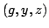
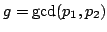
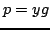
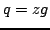

Usage
modularGcd()
Signatures
modularGcd: (P, P) (Partial P, P, P)
| Parameter | Type | Description |
|---|---|---|
| P | Polynomials over Z |
Returns
Returns  such that  or failed, and ifis not failed, then  and .
Remarks
This algorithm can fail because it runs out of primes. This will happen if the gcd has coefficients with more than around 3000 digits.